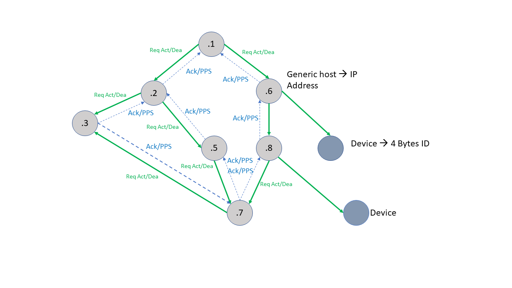
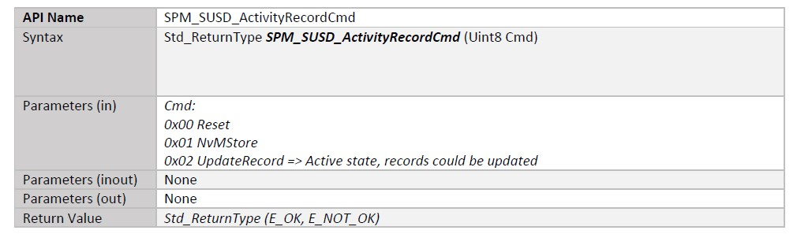

RTA-SUM SPM Design Notes
System View
Network topology
RTA-SUM SPM is a Complex Device Driver in the standardized AUTOSAR. RTA-SUM SPM main task is to manage the request for activating/deactivating specific software services.
SPM can receive Activation/Deactivation request for software services in two ways:
At the same time, SPM can handle the activation/deactivation of:
For the remote request, SPM uses the SM frame that is defined as follow:
[$DDS_SPM 0007]
Every SMFrame message:
have both message types in ascending Msg Type Order (PROFILE_REQUEST, REQ_STATUS_PROF_STATE).
Specify an Entry Length of zero if there is no information to convey for a message type.
[$Satisfies $SRS_SPM 0010]
The Payload associated with SMFrame.PROFILE_REQUEST represents the activation/deaction request done by the SM to a remote SM.
PROFILE_REQUEST uses the following fields:
[$DDS_SPM 0001]
Msg Type = 00 (1 byte)
Entry Length (2 byte value counting the number of remaining bytes in this Msg Type)
Activation Profile IDs (5 bytes each: 4 bytes ServiceID + 1 byte profile number) Repeating with Request Status and Profile State
[$Satisfies $SRS_SPM 0006]
[$DDS_SPM 0002]
Request enumeration (1 byte each) repeating with Activation Profile IDs * Request enumeration SHALL be given by the table in:
Value |
Literal |
Description |
|---|---|---|
0x00 |
Empty |
Not used - avoiding putting a real action request as the default value |
0x01 |
ACTIVATE |
Request to activate a profile |
0x02 |
DEACTIVATE |
Request to deactivate a profile |
0x03…0xFF |
Reserved for future |
Potential future literals can include ENABLE, DISABLE |
[$Satisfies $SRS_SPM 0006]
The Payload associated with SMFrame.REQ_STATUS_PROF_STATE represents the status of the requests received from a remote SM.
REQ_STATUS_PROF_STATE uses the following fields:
[$DDS_SPM 0003]
Msg Type = 01 (1 byte)
Entry Length (2 byte value counting the number of remaining bytes in this Msg Type)
Activation Profile IDs (5 bytes each: 4 bytes ServiceID + 1 byte profile number) Repeating with Request Status and Profile State
Request Status Value (1 byte) Repeating with Profile IDs and Profile State
[$Satisfies $SRS_SPM 0007]
[$DDS_SPM 0004]
The request status field SHALL be populated with the enumerations provided in the Table
Actually, the following Literals are implemented w.r.t. the full table reported by the $SRS_SPM 0007:
Value |
Literal |
Description |
|---|---|---|
0x01 |
OK_ACTIVATION |
Set to this value when an activation request is accepted. The requester is added to the requester list. |
0x02 |
OK_DEACTIVATION |
Set to this value when a deactivation request is accepted. The requester is removed from the requester list. |
[$Satisfies $SRS_SPM 0007]
[$DDS_SPM 0005]
Profile State Value (1 byte) Repeating with Profile IDs and Request Status
[$Satisfies $SRS_SPM 0008]
[$DDS_SPM 0006]
The Profile State field uses the enumeration provided: .. list-table:
* - Value
- Literal
- Description
* - 0x00
- INACTIVE
- Set to this value when the profile is valid and is currently in an inactive state.
* - 0x01
- ACTIVATING
- Set to this value when the profile is valid and is currently in an activating state.
* - 0x02
- ACTIVATED
- Set to this value when the profile is valid and is currently in an activated state.
* - 0x03
- DEACTIVATED
- Set to this value when the profile is valid and is currently in a deactivating state.
* - 0x04...0xFE
- Reserved
- Reserved for future state expansion.
* - 0xFF
- UNKNOWN
- Set to this value when the profile requested is unknown to the SM or when the profile requester does not have permission to request the profile.
Please, take into account that the UNKNOWN literal is unimplemented.
[$Satisfies $SRS_SPM 0009]
[$DDS_SPM 0009]
The network communication implementation for RequestStatusProfileState is implemented using the REQ_STATUS_PROFILE_STATE message
where the request status is captured by the Request Status field and the profile state is captured by the Profile State field.
[$Satisfies $SRS_SPM 0085]
The SM Send/Receive Mechanism is done by:
[$DDS_SPM 0048]
The SM frame SHALL be sent through the (VLAN)_SwMgrInfoTx_Evt where VLAN is the VLAN which the TrgDvc belongs to.
This operation is handled by the Spm_HandleVLANCommunication() SPM’s API that will call the right PPort.
[$Satisfies $SRS_SPM 0164] [$Satisfies $SRS_SPM 0076]
Note
An SPM can directly activate/deactivate only its own (local) software Services. For the remote one it just appears as the activation/deactivation requester.
The remote communication between nodes to activate/deactivate entities always involves the ECUs’ own SPM instances as agents.
So that, the activation/deactivation task gets itself in a recursive algorithm, in which the same routine is called until the among the several instance of the SPM in the network nodes. In other words, the Activation/Deactivation of a software service appears like a graph navigation to find the network node that hosts the software service and so the related SPM instance that is able to activate/deactivate it.
An example is provided in the following figure:


SPM to SPM communication
Each Requester SPM waits for a response from the requested one. This response shall inform the request about two possible effects of a SPM request:
Request has ben accepted: Provided an ACK value to the requesters
Request is on-going: The requester SPM’s next one is going down in the graph navigation to find who SPM is the manager of the requested service
In the last case, the requested SPM instance replies to its requester with a numeric code (this is the ProfileStatusValue).
A SPM instance:
Overall, a SM frame is sent by the Software Manager if occours one of the following conditions:
The SM frame is sent over the VLAN network to which the TrgDvc belongs. Please, take into account that the VLANId corresponds to the second MSB of the trgdvc IP ( I.e. for TrgDvcIP 192.11.1.4 the VLANId is 11). So, consequently, an SPM will receive SM frame over each VLANId configured.
SPM-SUSD Interaction
Shutdown Permission Management
The SPM receives the PermitExecution value from the SUSD. This value is used to determine if the SPM can start its functions.
The SPM send the ShutdownPermission to the SUSD with the following logic:
[$DDS_SPM 0530]
SPM_ShutdownPermission to 0xFFu to vote for shutdown if all the following conditions are met:HB Shutdown Delay since the last burst HeartBeat sent has elapsed.
Own wakeup bit is not set.
NO local profiles are requested.
SpmStayAwakeTimer has elapsed.
NO managed target devices are requested by remote via wake-up frames.
SPM_ShutdownPermission to 0xFEu (Shutdown Ready) when conditions are met:Final shutdown heartbeats have been sent.
SPM_ShutdownPermission to the actual rolling counter.NOTE: The SpmStayAwakeTimer is set to the configured value when a target device for a local profile is in Fault or Reboot state. The SPM instance will remain active for the configured period and only once the timer has expired it can transition to the PrepareToShutdown state, if the other conditions are met.
[$Satisfies $SRS_SPM 0032][$Satisfies $SRS_SPM 0058][$Satisfies $SRS_SPM 0059][$Satisfies $SRS_SPM 0137][$Satisfies $SRS_SPM 0138][$Satisfies $SRS_SPM 0157][$Satisfies $SRS_SPM 0164][$Satisfies $SRS_SPM 0054][$Satisfies $SRS_SPM 0252][$Satisfies $SRS_SPM 0253] [$Satisfies $SRS_SPM 0259]
[$DDS_SPM 0414]
SUM_SPM implements a port, PermitExecution, which can receive notification from
SUM_SUSD to execute its functions or prepare for shutdown.
SUM_SPM may use the configuration SPM_PermitExecution_Mask in its logic to allow configuration of which
PermitExecution bits are considered to trigger a start of its functions.
[$Satisfies $SRS_SPM 0112]
[$DDS_SPM 0415]
SPM starts execution of its functions when the Wakeup(s) Active bit in the SUSD_SPM_PermitExecution interface is TRUE.
[$Satisfies $SRS_SPM 0113]
[$DDS_SPM 0416]
When the ECU Reset bit in the PermitExecution bit is FALSE, then SUM_SPM sets its ShutdownPermission to Enable to support ECU reprogramming.
[$Satisfies $SRS_SPM 0114]
[$DDS_SPM 0650]
Target Off Bit Detection (Shutdown Target)
The function Sum_Spm_CheckHBCounterShallBeSentFullScale() checks the Shutdown Target bit (bit 1) of PermitExecution
to determine when the last heartbeat shall be sent out. The detection mechanism:
Checks if the Shutdown Target bit (bit 1) is 0 (shutdown requested).
Sets
Spm_HBCounterShallBeSentFullScaleto TRUE when the bit is 0.
[$Satisfies $SRS_SPM 0259]
[$DDS_SPM 0651]
Final Heartbeat Status Management
The final heartbeat transmission status is managed via a global variable (Spm_FinalHeartbeatSent) with getter/setter functions:
Sum_Spm_IsFinalHeartbeatSent(): Returns TRUE if the final shutdown heartbeat has been sent.Sum_Spm_Set_FinalHeartbeatSent(sent): Sets the final heartbeat sent status.
In PrepareToShutdown state:
If
Sum_Spm_IsFinalHeartbeatSent()returns TRUE, SPM writes 0xFE toShutdownPermissionsignaling SUSD can proceed with shutdown.The flag is set to TRUE after the final shutdown heartbeat with full-scale counter (0xFF) is transmitted.
The flag is reset to FALSE when transitioning back to Running state to prepare for the next shutdown cycle.
[$Satisfies $SRS_SPM 0259]
[$DDS_SPM 0652]
Request Handling in PrepareToShutdown State
Once SPM enters PrepareToShutdown state, it rejects all activation/deactivation requests and checks the shutdown target bit:
Remote requests: Ignored since the request queue is not parsed in this state.
Local requests: The SPM checks the current state and returns
E_NOT_OKif not in Running state, preventing local profile activation/deactivation during shutdown preparation.
[$Satisfies $SRS_SPM 0259]
DID 0xE0D7
[$DDS_SPM 0600]
The SPM calls the SUSD_SPM_UpdateRecord interface function to update the diagnostic record in the SUSD module related to the DID 0xE0D7.
[$Satisfies $SRS_SPM 0221]
[$DDS_SPM 0601]
For RID 0x02, the SPM shall communicate to SUSD whether at least one remote request is present.
In particular, the SPM checks if there is at least one power profile activated exclusively by a remote ECU,
which means that no local SWC has requested the activation of that same profile
(i.e. requesterIP != 0 for all active requesters of that profile).
In this scenario (at least one such profile exists), SUSD expects to receive 0x02 flagged TRUE (based on SUM’s design).
[$Satisfies $SRS_SPM 0221]
[$DDS_SPM 0602]
When no power profile is activated exclusively by a remote ECU, because every
profile either has no active request or has at least one local SWC requester
(requesterIP == 0) that takes priority, no remote request is considered
present.
In this scenario, SUSD expects to receive 0x02 flagged FALSE (based on SUM’s design).
[$Satisfies $SRS_SPM 0221]
[$DDS_SPM 0603]
Requirement tell us that SPM SHALL comunicate 0x20 when ‘An activation profile has been locally activated’:
this means that at least one power profile has an active request originated by a local SWC (i.e. requesterIP == 0), regardless of whether the profile itself is hosted locally or on a remote ECU.
A request is considered local when the requesterIP field of the requester entry is zero, indicating the request was issued by a SWC on the same ECU via the SPM_ActivateProfile C/S interface.
SUSD expect to receive 0x20 flagged TRUE in this scenario (by SUM’s design).
[$Satisfies $SRS_SPM 0221]
[$DDS_SPM 0604]
Requirement tell us that SPM SHALL comunicate 0x20 when ‘An activation profile has been locally activated’:
this means that if SPM detects that no profile has an active local requester (requesterIP == 0), it sends 0x20 flagged FALSE (by SUM’s design).
[$Satisfies $SRS_SPM 0221]
[$DDS_SPM 0610]
RID 0X26 when a Wake-up frame is received with a valid wake up bit. It should be noted that, when the Spm instance acts as an intermediate node, it can receive both Can and Ethernet Wake-up frames.
[$Satisfies $SRS_SPM 0221]
[$DDS_SPM 0605]
In order to prevent multiple NOT needed calls to C/S interface (i.e. periodic calls to SUSD_SPM_UpdateRecord to set the 0x20 flagged TRUE), SPM will just call the interface once. Then, SPM will call the interface just once to set the 0x20 flagged FALSE when it detects that no profile has an active local requester. After that, SPM will not call the interface anymore until it detects that a local requester is present again and so on.
This is valid for both flag, 0x20 and 0x2, with disconnected logic (i.e. 0x20 does not influence the 0x2 and vice versa).
It will be SUSD job handle the DID’s FSM.
[$Satisfies $SRS_SPM 0221]
[$DDS_SPM 0606]
So, to summarise, the SPM SHALL communicate, to the SUSD module, the following information regarding the 0xE0D7 :
[$Satisfies $SRS_SPM 0221]
[$DDS_SPM 0609]
In addition, the SPM SHALL provide C/S interface SPM_SUSD_ActivityRecordCmd to receive commands from the SUSD to update 0xE0DE and 0xE0DF records:


An additional “StopUpdate” command (0x03) has been added to match the non-active states of 0xE0D7 state machine.
[$Satisfies $SRS_SPM 0224]
SPM-ServiceManager interaction
SPM_ServiceActivationStatusNotification
[$DDS_SPM 0417]
SUM SPM provides a sender-receiver interface SPM_ServiceActivationStatusNotification
as described below to provide indication to other SUMs (SSFM, SSC ..etc.) about the activated service list and
if setting a DTC is allowed based on DTC suppression Timer as defined in SDV-8002. SUM SSFM uses that to
determine services to start monitoring and when to inhibit setting of DTCs (Loss of Function, invalid data, etc.).
SPM_ServiceActivationStatusNotification_Ifc interface dataElement definition:
SPM_ServiceActivationStatusNotification_Ifc.DataElement {
Uint16* serviceIdList, // List of Services Activated
bool* dtcAllowedList, // List of DTC Allowed Boolean
uint16 listLength // Length of the 2 output lists
}
NOTE: The list will maintain the up-to-date active services list at any point in time and should not change in the case of losing the Heartbeat of a remote device with a profile that the local SPM has activated (i.e. Loss of Node DTC should not affect this interface so that the Loss of Function can occur)
[$Satisfies $SRS_SPM 0126] [$Satisfies $SRS_SPM 0179]
SrvcMgr_SPM_ActivateServices
In Activation/Deactivation of a Profile section it is described how this interface is handled.
Helper Function
[$DDS_SPM 0141]
SPM calls the HelperFunction defined in *spm.spmGeneral.spmNameOfWakeUpHelperFunction* paramdef’s field.
[$Satisfies $SRS_SPM 0096][$Satisfies $SRS_SPM 0101][$Satisfies $SRS_SPM 0102][$Satisfies $SRS_SPM 0183][$Satisfies $SRS_SPM 0202]
[$DDS_SPM 0412]
When SPM calls the HelperFunction, it passes as input parameter a pointer to an array (of size 64 bits) that holds the wakeup bits needed (asserted + received if present) of the Frame A.
[$Satisfies $SRS_SPM 0097]
[$DDS_SPM 0114]
The bitfield to the Wakeup Helper follows the bit definitions specific for the Wakeup Frame in SDV-2017.
[$Satisfies $SRS_SPM 0098]
[$DDS_SPM 0115]
SPM sends the same bitfield to the Wakeup Helper Function as sent to the Wakeup Frame (in the same software execution cycle).
[$Satisfies $SRS_SPM 0121]
SPM Internal Design
SPM Class Diagram
The idea of the SPM internal design is to implement all the SPM functionalities as a single module. This means a real differentiation between Software Manager and Power Manager does not appear in the software design.
[$DDS_SPM 0404]
The periodic runnable Runnable_SPM_PowerManager_MainFunction() is the only entity responsible for implementing the Power Manager.
[$Satisfies $SRS_SPM 0094]
[$DDS_SPM 0403]
The periodic runnable SPM_SoftMgr_MainFunction() is the only entity responsible for all of the swEntities on that ECU.
[$Satisfies $SRS_SPM 0057] [$Satisfies $SRS_SPM 0094] [$Satisfies $SRS_SPM 0055]
Assuming all the components of the SPM inner architecture as Objects, the design appears as follows:
SPM Initialization Phase
At startup, SPM shall initialize all the data structures needed by the SPM:
It retrieves each power profile location from SD.
It retrieves information regarding the PGTT entries.
There are 2 ways of initialization thanks to the SpmGenerateInitRunnable parameter that runs SPM_Init only once during startup:
When parameter SpmGenerateInitRunnable is True:
The SPM_Init runnable shall call the SPM_Init function periodically, as defined by the SpmInitFuncPeriodicity parameter.
When parameter SpmGenerateInitRunnable is False:
The SPM_Init function is added to the BswM init action list and executed by BswM.
Activation/Deactivation of a Profile
A Profile can be local (located on the same ECU of current SPM instance) or remote (located on a remote ECU with respect to the SPM instance). SPM can handle request coming both from local requester (a intra-ECU SWC) or remote one (inter-ECU).
The owner of the Power Profile will set the state of it. This means that is responsability of the SPM located on the same ECU of the Profile to activate/deactivate it. Moreover, if the requester is Remote, SPM will provide a feedback about the request by SM frame. If the requester is local, no feedback is provided to the SWC.
[$DDS_SPM 0647]
The SPM needs to provide a feedback to the EACH valid request received by SM frame, even if the requester has already requested the same action before.
The process is triggered by the API Spm_AppendRequesterInReqList().
[$Satisfies $SRS_SPM 0256]
[$DDS_SPM 0054]
The requesting SPM SHALL send SM frame periodically until the activate/deactivate request is correctly acknowledged by the remote (requested) SM. The periodicity of the activate/deactivate request SHALL be calibratable, with the default value as the Spm/SpmGeneral/SpmActDeactRetryPeriodicity parameter (default value of 1000ms).
[$Satisfies $SRS_SPM 0089] [$Satisfies $SRS_SPM 0169] [$Satisfies $SRS_SPM 0078]
Request Handling
SPM can receive:
[$DDS_SPM 0012]
SM activates swEntity it manages based on a local request or remote request. SM has the capabilities to automatically activate swEntity’s dependencies.
[$Satisfies $SRS_SPM 0060]
[$DDS_SPM 0018]
The SM validates a remote request by:
SUM_SPM_prv_GetIpAddressBinarySearchLocal() API validates the IP host receivedSpm_GetPowProfIndexFromSwIDProfNumber() API validates the power profile ID received[$Satisfies $SRS_SPM 0077]
[$DDS_SPM 0025]
The SPM checks if the activation request is valid by checking if the profile is known to the SPM thanks to the Spm_GetPowProfIndexFromSwIDProfNumber() (for remote activation) and Spm_GetPowProfIndexFromAppID() (for local activation) APIs.
[$Satisfies $SRS_SPM 0062]
[$DDS_SPM 0047]
The SrcPM_ID of the SM frame shall match with the SpmSrcIp that match the SpmVLANId to which the TrgDvc that will receive the SM frame belongs to.
[$Satisfies $SRS_SPM 0164]
If the the profile is known:
- value of the SpmPowprf/SpmLocActivationAllowed parameter (valid only for local request).- Vehicle Power Mode value received from SUSD.- LowVoltageBattery Priority received from Energy Optimizer.- Learning Session status is set as PENDING or not.
[$DDS_SPM 0014]
The SM tracks the requesters of each profile managed by using the SpmPowerProfileStateMachine_RAM_SubStruct.SpmRequesterList_RAM_SubStruct struct:
Spm_RequesterList_ActivationRequestHandler() API adds the requester to the list setting the proper type of request in the ReqType field.Spm_RequesterList_DeactivationRequestHandler() API changes the ReqType variable associated with the profile to Spm_REQ_DEACTIVATION.[$Satisfies $SRS_SPM 0065]
[$DDS_SPM 0032]
When a valid DeactivateProfile request is received the requester’s flag ReqType in the requester list is changed to Spm_REQ_DEACTIVATION by the Spm_RequesterList_DeactivationRequestHandler() API.
[$Satisfies $SRS_SPM 0071] [$Satisfies $SRS_SPM 0068] [$Satisfies $SRS_SPM 0068]
[$DDS_SPM 0036]
Spm_RequesterList_DeactivationRequestHandler() API changes the request type of the requester IP from the Power Profile’s requester list to Spm_REQ_DEACTIVATION. If the requester has not previously requested an activation, it is not present in the list of the requester. So, no actions are performed.
[$Satisfies $SRS_SPM 0086]
[$DDS_SPM 0033]
When a remote requester is removed from the list of requesters for a profile (i.e. request a deactivation), the SM will provide feedback by SMFrame.REQ_STATUS_PROF_STATE.
[$Satisfies $SRS_SPM 0145]
The following are a set of requirements that describe how the SPM handles the activation/deactivation requests:
[$DDS_SPM 0015]
When a new valid ActivateProfile request is received and the state of the profile is Inactive:
The requester IP address is added to the requester list by
Spm_RequesterList_ActivationRequestHandler()API setting the proper type of request in theReqTypefield.When
Spm_LocalPowerProfile_FSM()detects that there is a requester withACTIVATED/ACTIVATED_CONSUMEDflag and the state of the profile is Inactive it triggers the change of the state to ActivatingWhen
Spm_RemotePowerProfile_FSM()detects that there is a requester withACTIVATED/ACTIVATED_CONSUMEDflag, an activation request is sent to the remote provider of the service (if it was not previously sent)
[$Satisfies $SRS_SPM 0066][$Satisfies $SRS_SPM 0077]
[$DDS_SPM 0016]
When a valid ActivateProfile request is received and the state of the profile is Activating:
The requester IP address is added to the requester list by
Spm_RequesterList_ActivationRequestHandler()API (if it is not already present).The activation process continues
[$Satisfies $SRS_SPM 0069] [$Satisfies $SRS_SPM 0077] [$Satisfies $SRS_SPM 0090]
[$DDS_SPM 0017]
When a valid ActivateProfile request is received and the state of the profile is Deactivating:
The requester IP address is added to the requester list by
Spm_RequesterList_ActivationRequestHandler()API.When
Spm_LocalPowerProfile_FSM()detects that there is a requester and the state of the profile is Deactivating it triggers the change of the state to Activating
[$Satisfies $SRS_SPM 0073]
[$DDS_SPM 0029]
Power Profile requesters are stored inside the SpmPowerProfileStateMachine_RAM_SubStruct.SpmRequesterList_RAM_SubStruct struct that
is not stored in the Non Volatile Memory. So, at each re-start the SM does not know the previous requesters.
[$Satisfies $SRS_SPM 0088]
Local Request Handling
Local Request of activation/deactivation of a PowerProfile are done by a SWC calling the C/S operations SPM_ActivateProfile(uint16 ApplicationInterfaceID)/SPM_DeactivateProfile(uint16 ApplicationInterfaceID). PowerProfile’s ApplicationInterfaceID is the one configured in the SpmPowprf/SpmApplIntID paramter. The SPM will start the activation/deactivation process if the parameter SpmPowprf/SpmLocActivationAllowed is set to true.
[$DDS_SPM 0024]
The SPM provides an API SPM_ActivateProfile() to allow local SWCs to activate profiles. The return value SHALL be E_NOT_OK if the profile is unknown for the SPM or there is an ongoing deactivation request for the same profile.
SPM_ActivateProfile operation signature:
Std_ReturnType SPM_ActivateProfile (
uint16 ApplicationInterfaceID
)
This API is an Operation of the C/S CS_SPM_ProfileRequest interface.
[$Satisfies $SRS_SPM 0128][$Satisfies $SRS_SPM 0075]
[$DDS_SPM 0034]
Local Power Profile deactivation request to an SM is done using the SPM_DeactivateProfile() method.
[$Satisfies $SRS_SPM 0084]
[$DDS_SPM 0031]
The SPM provides an API SPM_DeactivateProfile to allow local SWCs to deactivate profiles.
The return value SHALL be E_NOT_OK if the profile is unknown for the SPM or there is an ongoing activation request for the same profile. SPM_DeactivateProfile operation
signature:
Std_ReturnType SPM_DeactivateProfile (
uint16 ApplicationInterfaceID
)
This API is an Operation of the C/S CS_SPM_ProfileRequest interface.
[$Satisfies $SRS_SPM 0129]
[$DDS_SPM 0540]
SPM_ActivateProfile() and SPM_DeactivateProfile() use a set of inter-runnable variables to check for conflicting local requests. The variables are as follows:
Spm_LastDeactReqID: The ApplicationInterfaceID of the latest deactivation request.
Spm_LastDeactReqFlag: A flag indicating the latest deactivation process is still ongoing or not.
Spm_LastActReqID: The ApplicationInterfaceID of the latest activation request.
Spm_LastActReqFlag: A flag indicating the latest activation process is still ongoing or not.
Whenever an activation request is received, the SPM_ActivateProfile() checks if a deactivation request for the same ApplicationInterfaceID is under process or not.
If there is such request under process, the activation request is discarded and the runnable returns E_NOT_OK.
Likewise, whenever a deactivation request is received, the SPM_DeactivateProfile() checks if an activation request for the same ApplicationInterfaceID is under process or not.
If there is such request under process, the deactivation request is discarded and the runnable returns E_NOT_OK.
[$Satisfies $SRS_SPM 0091]
[$DDS_SPM 0043]
So, when a DeactivateProfile request is received and the power profile is in the Inactive state, no action is done since the Spm_RequesterList_DeactivationRequestHandler() API will have no impact.
[$Satisfies $SRS_SPM 0067]
Get Activation Permission of Power Profile
Any SWC may query the activation permission for a given power profile using the C/S operation SPM_GetProfileActivationPermission by providing the ApplicationInterfaceID. If the ApplicationInterfaceID is not found, the operation returns E_NOT_OK as the error value.
[$DDS_SPM 0542]
The SPM provides an API SPM_GetProfileActivationPermission to allow local SWCs to get the activation permission for a power profile.
The return value SHALL be E_NOT_OK and the permission FALSE if the profile is unknown for the SPM. SPM_GetProfileActivationPermission operation signature:
Std_ReturnType SPM_GetProfileActivationPermission (
uint16 ApplicationInterfaceID,
boolean *PermissionStatus
)
This API is an Operation of the C/S CS_SPM_ProfileActivationPermission interface.
[$Satisfies $SRS_SPM 0243]
Get Power Profile State as a Local SWC
Local SWC may query the current state of a given power profile using the C/S operation SPM_GetProfileState by providing the ApplicationInterfaceID. If the ApplicationInterfaceID is not found, the operation returns E_NOT_OK as the error value.
[$DDS_SPM 0541]
The SPM provides an API SPM_GetProfileState to allow local SWCs to get the current state of a power profile.
The return value SHALL be E_NOT_OK if the profile is unknown for the SPM. SPM_GetProfileState operation
signature:
Std_ReturnType SPM_GetProfileState (
uint16 ApplicationInterfaceID,
uint8 * ProfileState
)
This API is an Operation of the C/S CS_SPM_RequestStatusProfileState interface.
[$Satisfies $SRS_SPM 0076]
Power Profile dependencies type
Each dependencies can have one of the following type:
Note
The Power Profile received in the request will be by default handled as ACTIVATED && CONSUMED. The dependency type is meaningfull only for the dependencies and it is a configurable parameter.
In the following a set of requirements that describe how the SPM handles the dependencies of a Power Profile:
[$DDS_SPM 0026]
SUM SPM SHALL do the following when attempting to activate an activation profile: if the profile has remote dependencies with ACTIVATED/ACTIVATED_CONSUMED dependency type, the SPM sends a remote ACTIVATE command.
[$Satisfies $SRS_SPM 0124] [$Satisfies $SRS_SPM 0079]
[$DDS_SPM 0030]
If there are no requesters with ACTIVATED/ACTIVATED_CONSUMED reqDependencyType for a Power Profile that is Activated or Activating, the Spm_LocalPowerProfile_FSM()/Spm_RemotePowerProfile_FSM() API will trigger the deactivation process for that Power Profile.
[$Satisfies $SRS_SPM 0061] [$Satisfies $SRS_SPM 0071] [$Satisfies $SRS_SPM 0068] [$Satisfies $SRS_SPM 0148]
[$DDS_SPM 0042]
If the profile requested has a dependency type CONSUMED, SPM enables the corresponding PDU-Group for that service by Spm_SwitchNetworkPdu() API.
[$Satisfies $SRS_SPM 0125] [$Satisfies $SRS_SPM 0087]
FSM of a Local Power Profile
A profile is defined as local as per Spm/SpmConfigSet/SpmPowPrf/SpmProfileIsLocal.
The SPM will execute periodically a FSM over a Power Profile in order to handle it. This is done by Spm_LocalPowerProfile_FSM().
The following is a set of requirements that describe how the SPM handles the state of local profiles:
[$DDS_SPM 0044]
When the profile-owning software entity itself is activated transition to Activated.
[$Satisfies $SRS_SPM 0070]
[$DDS_SPM 0045]
A profile SHALL transition into the Activated state as soon as the swEntity associated with the profile and its network communication are both activated. The activation of dependencies can continue in this activated state.
[$Satisfies $SRS_SPM 0080] [$Satisfies $SRS_SPM 0190]
[$DDS_SPM 0046]
When the software entity owning the profile has been deactivated AND all the dependencies in the profile have been successfully requested to be deactivated, transition to Inactive.
[$Satisfies $SRS_SPM 0072]
Spm_RetrieveDependencyTypeFromRequesterList() is called in order to understand the type of request present in the Power Profile’s requester list.
Note
These Power Profile’s lists are populated as described in the Request Handling charts.
The following scenatio can occours:
If the state of the Profile is Inactive (or Activating) and there are request Spm_ONLY_ACTIVATED_REQ_PRESENT or Spm_ACTIVATED_AND_CONSUMED_REQ_PRESENT, the SrvcMgr_ActivateServices is called.
[$DDS_SPM 0027]
For the profile dependencies that are local, SPM uses the SUM SrvcMgr client server operation
SrvcMgr_ActivateServicesto activate the profile.
[$Satisfies $SRS_SPM 0124] [$Satisfies $SRS_SPM 0079]
The following scenario can occours:
If the state of the is Activated (or Deactivating) and there are NO request Spm_ONLY_ACTIVATED_REQ_PRESENT or Spm_ACTIVATED_AND_CONSUMED_REQ_PRESENT and the service is not used by other profiles, the SrvcMgr_ActivateServices is called.
[$DDS_SPM 0041]
For the profile dependencies that are local, SPM uses the SUM SrvcMgr client-server operation
SrvcMgr_ActivateServicesdefined inSDV_8201to deactivate the profile dependencies.
[$Satisfies $SRS_SPM 0125] [$Satisfies $SRS_SPM 0087]
The following scenario can occours:
[$DDS_SPM 0010]
When the state of a local profile changes, the boolean variable isStateProfileChanged (associated to that profile) is set to TRUE in order to let the API Spm_SoftwMgr_PopulateSMFrame() know that an SM frame with the updated state of the profile is needed to be sent for each remote requester of the profile.
[$Satisfies $SRS_SPM 0074][$Satisfies $SRS_SPM 0077]
Moreover, if there are request Spm_ONLY_CONSUMED_REQ_PRESENT or Spm_ACTIVATED_AND_CONSUMED_REQ_PRESENT the PDUs associated to the service are enabled. Otherwise, the PDUs are disabled.
FSM of a Remote Power Profile
A profile is defined as remote as per Spm/SpmConfigSet/SpmPowPrf/SpmProfileIsLocal.
[$DDS_SPM 0011]
The SM knows the location of a software entity hosted on a remote host by exploiting the Sd_GetNodeAddress() API. If SchM_CData_Sd_SdEnableExtendedLearningTableFormat is TRUE, SPM will get the SD configuration for the specific service before calling the API. Otherwise, SPM will call it with default values for InstanceId, MajorVersion.
[$Satisfies $SRS_SPM 0056]
The address of the Profile’s provider needs to match to at least one IP defined in the Spm/spmConfigSet/SpmPgttEntries/SpmTrgDvc/SpmTrgDvcID list.
The SPM (SPM_0) will act as requester of an activation to another SPM (SPM_1) of the service.
Note
SPM_0 and SPM_1 has no real meaning. Is just for explanation purpose.
In this scenario, the SPM (SPM_0) that receive the request from a SWC (local request) or remote (another SPM) is just responsible to send a command to the remote ECU (SPM_1) in order to activate/deactivate the profile w.r.t. the request present in the Power Profile’s requester list.
The SPM will execute periodically a FSM over a Power Profile in order to handle it. This is done by Spm_RemotePowerProfile_FSM(). Spm_RetrieveDependencyTypeFromRequesterList() is called in order to understand the type of request present in the Power Profile’s requester list.
Note
These Power Profile’s lists are populated as described in the Request Handling charts.
The following scenatio can occours:
If request’s type is Spm_ONLY_ACTIVATED_REQ_PRESENT or Spm_ACTIVATED_AND_CONSUMED_REQ_PRESENT and the activation request is not already sent the following operation occours:
- a command to activate the profile is set to the flag CommandSend in order to let Spm_SoftwMgr_PopulateSMFrame() API know that a remote request SHALL be sent;- SrvcMgr_ActivateServices is called;
[$DDS_SPM 0531]
The SM frame SHALL be resent its ActivateProfile request when SPM receives the status of a remote node that has profiles requested from this SM as Pending Shutdown while that profile is still required.
[$Satisfies $SRS_SPM 0134]
If request’s type is Spm_ONLY_CONSUMED_REQ_PRESENT or Spm_NO_REQ_PRESENT and the deactivation request is not already sent the following scenario occours:
[$DDS_SPM 0040]
[$Satisfies $SRS_SPM 0125] [$Satisfies $SRS_SPM 0087]
Moreover, if there are request Spm_ONLY_CONSUMED_REQ_PRESENT or Spm_ACTIVATED_AND_CONSUMED_REQ_PRESENT and the PDUs associated to the service are disabled then they are enabled.
If there are no requests and no other profile is using the PDU Groups and the PDUs associated to the service are enabled then they are disabled.
If the remote host goes into the Faulted/Reboot state, the PM must keep retrying to wake it up. After the host becomes active, he SM SHALL reissue all previously requested profiles to the host.
PDU Group Handling
Each Power Profile could have one or more PDU groups (Tx and Rx) associated which behaviour is handled by the SPM. When a Power Profile is activated, the PDU groups associated to it should be enabled; if the Power Profile is inactive, PDU groups should be disabled.
Note
Actually, there is a reference in the SPM’s ParamDef spm/spmConfigSet/spmConfiguredPowPrf/spmSrvcPduGroupTxRef and spm/spmConfigSet/spmConfiguredPowPrf/spmSrvcPduGroupRxRef containers.
The Enable/Disable feature is achieved thanks to the BswMPduGroupSwitch BswM action: it calls the ComM in order to enable or disable a PDU group.
So, for each PDU group, a Mode Request port is needed w.r.t. the BswM and relative creation of a MODE-SWITCH-INTERFACE.
SPM calls Rte_switch() functions (one for each PDU group) that are stored as function pointer in the arrays
Spm_Rte_SwitchPduGroup_<<NameOfPowProfAssociated>>_tx_refs[] or Spm_Rte_SwitchPduGroup_<<NameOfPowProfAssociated>>_rx_refs[] at the end of a Power Profile (De)Activation process.
[$DDS_SPM 0028]
For every profile dependency in Step 2:
If the dependency type is CONSUMED and the corresponding PDU-Group for that service is disabled, SPM enables the corresponding PDU-Group for that service by
Spm_SwitchNetworkPdu()API.
[$Satisfies $SRS_SPM 0124] [$Satisfies $SRS_SPM 0079]
Overall, the behavior is :
PowProf Request |
PDU status |
Result of procedure |
PDU Group’s Action |
|---|---|---|---|
Activation |
Init or Off |
OK |
Enable PDU group |
Activation |
Init or off |
NOT_OK |
No action |
Deactivation |
On and not used by other profiles |
OK |
Disable PDU group |
Deactivation |
On and not used by other profiles |
NOT_OK |
No action |
Activation |
On |
OK |
No Action |
Activation |
On |
NOT_OK |
No Action |
Deactivation |
Off |
OK |
No Action |
Deactivation |
Off |
NOT_OK |
No Action |
Deactivation |
On and used by other profiles |
OK |
No Action |
Deactivation |
On and used by other profiles |
NOT_OK |
No Action |
[$DDS_SPM 0056]
PDU Groups state are stored inside the SpmPowerProfileStateMachine_RAM_SubStruct.PduStatus. This is done to check
the state before enabling/disabling PDU groups to avoid repetitive enabling/disabling requests.
[$Satisfies $SRS_SPM 0125]
Service discovery learning indication management logic
In order to reduce the traffic over the ETH network when a new learning session is being run, SPM deactivates all active profiles and rejects new activations.
[$DDS_SPM 0653]
SPM offers a C/S SPM_SDLearningStatusIndication on the Runnable_SPM_SdLearningStatusIndication operation through which SrvcManager notifies the status of the Learning Session.
When SPM_SDLearningStatus transitions to:
SUM_LRNG_PENDING, SPM shall deactivate all active profiles and notify requesters with Spm_REJECTED_PROFILE_BLOCKED reason;
SUM_LRNG_FAILED from SUM_LRNG_PENDING, SPM shall query SD for Nodes IP address by calling Sd_GetNodeAddress in order to refresh the IP list and reset PowerProfiles internal flags;
SUM_LRNG_SUCCESSFUL from SUM_LRNG_PENDING, SPM shall query SD for Nodes IP address by calling Sd_GetNodeAddress in order to refresh the IP list;
SUM_LRNG_NOT_STARTED from *SUM_LRNG_PENDING, SPM shall query SD for Nodes IP address by calling Sd_GetNodeAddress in order to refresh the IP list (this should ideally not be a valid scenario).
[$Satisfies $SRS_SPM 0260][$Satisfies $SRS_SPM 0262][$Satisfies $SRS_SPM 0263][$Satisfies $SRS_SPM 0264][$Satisfies $SRS_SPM 0265]
[$DDS_SPM 0654]
SPM retains the current Learning Session status by setting the IRV Rte_Irv_SPM_Spm_Learning_Status.
This variable is accessible from other runnables and is used to check whether the current status is SUM_LRNG_PENDING. In case Rte_Irv_SPM_Spm_Learning_Status == SUM_LRNG_PENDING, new local and remote activation requests will be denied. Remote activation requesters will be reported Spm_REJECTED_PROFILE_BLOCKED reason.
[$Satisfies $SRS_SPM 0263][$Satisfies $SRS_SPM 0261]
SPM Activation Profile Error Handling
SPM SHALL monitor the target device status for each targets that are:
Requesters for SPM own power profiles, i.e. the profiles that are activated by remote power profiles as dependencies
Requested for SPM own power profiles, i.e. the profiles that requests the activation of remote profiles as dependencies
Loss Of Communication with a Requester SM
[$DDS_SPM 0532]
SPM SHALL handle possible errors in communication with requesting (remote) SM by the periodic call of handling function Spm_LoC_wRequester_Handler() from Software Manager Main Function.
[$Satisfies $SRS_SPM 0092]
[$DDS_SPM 0533]
SPM error handling function Spm_LoC_wRequester_Handler() identifies the IP address/es of requesting SMs thanks to a scan of the requester lists for each SPM local profiles.
[$Satisfies $SRS_SPM 0092]
[$DDS_SPM 0534]
WHEN a requesting SM appears in the list of the SPM profile requesters, the function Spm_LoC_wRequester_Handler() performs the following actions:
For each specific power profile requester, it verifies that the remote requester does not have any requests or deactivation requests in progress by checking the spmReqItm::ReqType field.
IF the spmReqItm::ReqType field is set to SPM_NULL_REQ or SPM_REQ_DEACTIVATION no actions is taken for that requester.
OTHERWISE, it checks the requester’s Power State by using Spm_DevicePowerStateParser function.
[$Satisfies $SRS_SPM 0092]
[$DDS_SPM 0535]
The error handling function Spm_LoC_wRequester_Handler() retrieves the Power State of all target devices by the Inter-runnable variable Rte_Irv_SPM_Spm_DevicePowerState. It also obtains the Power State of the desired target device using the Spm_DevicePowerStateParser() function, which uses the field spmReqItm::requesterIP as a filter.
[$Satisfies $SRS_SPM 0092]
[$DDS_SPM 0536]
WHEN the error handling function Spm_LoC_wRequester_Handler() detects that an active requesting SM (Power Profile activation request is on-going or kept it up) is SPM_Faulted or SPM_Reboot power state THEN Spm_LoC_wRequester_Handler() :
- uses the Spm_AppendFeedbackErrorItemToList() function to add the error to the next outgoing SM frame with the following information:
Profile identifier
Target IP
Error code based on the requester’s power state. If SPM_Faulted, the error code is Spm_REJECTED_LOSS_OF_HEARTBEAT, otherwise it is Spm_REJECTED_RESET_DETECTED.
sets spmReqItm::ReqType field to SPM_NULL_REQ for the specific power profile requester,
sets the SpmStayAwakeTimer timer to the configured value if the Profile is local.
[$Satisfies $SRS_SPM 0092] [$Satisfies $SRS_SPM 0251] [$Satisfies $SRS_SPM 0252]
[$DDS_SPM 0537]
IN CASE the requesting SM IP address is not present in the pre-configured/calibrated table of Power Graph for the current SPM node THEN the error handling function Spm_LoC_wRequester_Handler() does not take any action on out-coming SM message but it removes the item from local profile requester list setting the field spmReqItm::REqType to SPM_NULL_REQ.
[$Satisfies $SRS_SPM 0092]
Activation/Deactivation Error Handling
Profile Activation Behavior on SM Restart
[$DDS_SPM 0538]
Upon restarting, SM shall perform a cleanup of all previously activated profiles to ensure that any software entities activated before the restart are not left in an undefined or unmanageable state. Profiles that are not designated as default activations on SM startup shall be deactivated. This approach ensures a clean system state and requires all profile requesters to reinitiate activation requests with the SM after the restart.
Additionally, the SM shall not automatically resend profile activation requests to other SMs that were made prior to the restart. Such requests will only be sent if the activation criteria are re-evaluated and met after the restart. This ensures that all activations are based on the current system state and prevents unintended or stale activations.
[$Satisfies $SRS_SPM 0219]
[$DDS_SPM 0539]
When SPM reads an SM Frame, before calling Spm_Handler_prfReqDispatcherForActivationFromRemote() or Spm_prv_prfReqDispatcher() for activation/deactivation, it checks for any conflicting request. A conflicting request happens when in a single SM Frame, there are 2 or more requests for the power profile under check with different request types. For instance, if there are 2 requests for a power profile one asking for activation and the other asking for deactivation, in this SM Frame a conflict happened. SPM discards all such requests and for that power profile adds an error with the following information:
Profile identifier
Target IP
Error code REJECT_REQUEST_INVALID
[$Satisfies $SRS_SPM 0091]
[$DDS_SPM 0055]
If a restart condition has been detected, then the SM SHALL re-request all profiles that it previously requested to that host.
[$Satisfies $SRS_SPM 0171]
Low Voltage priority level Handling
Each Power Profile configured has two LowVoltagePriority: LowVoltagePriority_VEH_OFF and LowVoltagePriority_VEH_ON. When a request to activate a local profile is received, the SPM will check the value of the LowVoltagePriority_VEH_ON if the Power Mode is Vehicle On or the LowVoltagePriority_VEH_OFF if the Power Mode is Vehicle Off w.r.t. the last value received from the Energy Optimizer.
[$DDS_SPM 0057]
The SPM module calls the Spm_ReadLowVoltagePriorityStatus() API to read and save the Low Voltage Priority level value.
This value can only be obtained from the low voltage energy optimizer after confirming its availability from the SSFM module
via the SignalAvailability port interface. If the data is available, the SPM module receives it and notifies the NvM that the content of the RAM mirror block have changed, so that it can be stored in the Nvm during shutdown; otherwise, no action is taken.
It should be noted that during the SPM module startup phase, since the NvMSelectBlockForReadAll parameter is set to TRUE, the last Low Voltage Battery Priority level value saved in Nvm is retrieved, if available. Furthermore, during the shutdown phase, the value present in the RAM mirror block will be saved in the NvM, as the NvMSelectBlockForWriteAll parameter is set to TRUE.
[$Satisfies $SRS_SPM 0258][$Satisfies $SRS_SPM 0242]
[$DDS_SPM 0035]
The Spm_Get_ActivationAvailabilityLowVoltageBatteryPriority() API allows to check whether a profile activation request can be handled based on the the Low Voltage Battery Priority level value.
- If the saved value is smaller than the one configured for the profile, the API returns FALSE, indicating that the activation request is refused OR the profile SHALL be deactivated;- If the saved value is greater than or equal to the one configured for the profile, the API returns TRUE, indicating that the activation request can be handled;
[$Satisfies $SRS_SPM 0194]
[$DDS_SPM 0050]
If the Spm_Get_ActivationAvailabilityLowVoltageBatteryPriority() API considers that the activation request from the remote device can not be handled, the REJECTED_LACK_OF_POWER tag will be set
in the feedback SMFrame.REQ_STATUS_PROF_STATE.
[$Satisfies $SRS_SPM 0194]
[$DDS_SPM 0037]
If the Spm_Get_ActivationAvailabilityLowVoltageBatteryPriority() API considers that the activation request coming from local can not be handled, the request is rejected.
[$Satisfies $SRS_SPM 0194]
[$DDS_SPM 0038]
The API Spm_ErrorHandler_LowVoltageBattery() periodically check if profiles can remain Active/Activating w.r.t. the LowVoltageBattery Priority.
If it detects that a profile does not satisfies anymore the conditions, the Spm_SendDeactivationRequestForEachRequester() API will send deactivation request for each its requester
in order to automatically deactivate the profile.
[$Satisfies $SRS_SPM 0203]
[$DDS_SPM 0648]
When the SPM receives REJECTED_LACK_OF_POWER as a response to a previous activation request, the SPM trigger the activation of the profile
with the Application Interface ID: LVOptmzerChk by calling the function Spm_LowVoltLVOptmzerChkApplicationInterfaceID_TriggerActivation().
[$Satisfies $SRS_SPM 0257]
[$DDS_SPM 0649]
The function Spm_LowVoltLVOptmzerChkApplicationInterfaceID_PeriodicCheck() is called periodically in order to check if the profile with Application Interface ID: LVOptmzerChk needs to be deactivated or not.
If the profile was previously activated by Spm_LowVoltLVOptmzerChkApplicationInterfaceID_TriggerActivation(), this function needs to deactivate the profile if one of the two conditions
is satisfied:
[$Satisfies $SRS_SPM 0257]
VehiclePowerMode Handling
[$DDS_SPM 0051]
When SpmProfActivationTimeOutVehOff is 0, it means that the profile cannot be activated in off power mode.
[$Satisfies $SRS_SPM 0197] [$Satisfies $SRS_SPM 0151]
[$DDS_SPM 0052]
Spm_ErrorHandler_VehOff API handles SpmProfActivationTimeOutVehOff according to the Vehicle Power Mode.
If the VehPowMode is OFF, the Power Profile with SpmProfActivationTimeOutVehOff equal to zero is deactivated. If the timeout configured is greater then zero, it is decreased till it reach the zero.
[$Satisfies $SRS_SPM 0165]
In case the Power Mode is Vehicle Off, then a power profile can stay activated only for a specific amount of time. This amount of time is defined as SpmProfActivationTimeOutVehOff.
This timer can be configured for each power profile. The timer starts as soon as the SPM takes care about the activation of a Power Profile and when it expires, the Power Profile shall start the deactivation procedure.
If a profile has the SpmProfActivationTimeOutVehOff parameter set to 0u, when a request to activate it is received and the Power Mode is Vehicle Off, the request is discarded with the REJECTED_LACK_OF_PERMISSION set in the SM frame as feedback.
[$DDS_SPM 0053]
If a remote requester ask for an activation of a profile that can not be handled for the current VehPowMode, the REJECTED_LACK_OF_PERMISSION tag will be set in the feedback SMFrame.REQ_STATUS_PROF_STATE.
[$Satisfies $SRS_SPM 0151]
HeartBeat Management
HeartBeat (SOME/IP frame) is used in order to convey the status of the controller (i.e. the flag Permit Execution received from SUSD).
[$DDS_SPM 0302]
PM publishes a periodic heartbeat on the sftpwrmgr_heartbeat_Gen interface to inform remote hosts that the host where the PM resides is available for communication.
[$Satisfies $SRS_SPM 0049]
[$DDS_SPM 0305]
The first Heartbeat sent by the PM has a value of zero. PM starts sending heartbeat as soon as the SPM software is enabled for running by system conditions.
[$Satisfies $SRS_SPM 0050]
[$DDS_SPM 0306]
After the initial transmission of a zero HeartbeatCounter value, the PM increments the HeartbeatCounter by one with each subsequent transmission of the message.
[$Satisfies $SRS_SPM 0051]
[$DDS_SPM 0307]
PM transmits the Heartbeat message with a HeartbeatCounter value of 2^32-1 whenever the SUSD de-asserts the bit in the Permit Execution value.
[$Satisfies $SRS_SPM 0053]
The above functionalities are achieved by the Spm_PM_HB_Tx_Handler() function (that is called by the periodic Runnable_SPM_PowerManager_MainFunction()):
The HeartBeat is sent in Multicast on all the IP defined in the Spm/spmConfigSet/SpmPgttEntries/SpmWkngDvc/SpmDstIp.
Each remote target device can have multiple IP associated to it (defined in the Spm/spmConfigSet/SpmPgttEntries/SpmTrgDvc/SpmTrgDvcID list). So, each frame received with SrcIP belonging to the list of SpmTrgDvcIP will contribute to determining the status of the remote controller.
The HeartBeat frame message is defined as follows:
[$DDS_SPM 0301]
The Custom Header of PM messages is sent with the ID 0xFFFE 7FFE.
[$Satisfies $SRS_SPM 0011]
[$DDS_SPM 0300]
The SrcPM_ID is the 4 bytes of the Src IP address.
[$Satisfies $SRS_SPM 0004]
[$DDS_SPM 0304]
The HeartbeatCounter is an incremental counter of the type uint32 where it will count from 0 to 2^32-1.
[$Satisfies $SRS_SPM 0012]
[$DDS_SPM 0309]
Heartbeat message has a uint16 field NumberProfileActive that represents the number of NOT INACTIVE power profiles.
[$Satisfies $SRS_SPM 0215] [$Satisfies $SRS_SPM 0217]
[$DDS_SPM 0310]
SM provides the Spm_GetNotInactiveProfNumberForHB() API that returns the number of NOT INACTIVE power profiles.
[$Satisfies $SRS_SPM 0218]
[$DDS_SPM 0308]
PM broadcasts the Heartbeat message at a calibratable periodic rate for the first 3 counts (default 5ms) and a separate calibratable periodic rate for all subsequent counts (default 1 second).
[$Satisfies $SRS_SPM 0052]
[$DDS_SPM 0639]
PM prevents shutdown until a calibratable period of time after the last burst Heartbeat has been sent (default 2s).
[$Satisfies $SRS_SPM 0054]
[$DDS_SPM 0641]
PM prevents shutdown as long as calibratable own wakeup bit is set in the received wakeup frame.
[$Satisfies $SRS_SPM 0054]
[$DDS_SPM 0402]
PM stores HeartBeat value in the Spm_PowMgr_TrgDvc_Type.MonitoringType struct that is not stored in the Non Volatile Memory. So, at each re-start the PM does not know the previous HeartBeat’s value.
[$Satisfies $SRS_SPM 0054]
[$DDS_SPM 0312]
To send the HeartBeat the PPorts (VLAN)_PwrMgrHeartbeatTx_Evt is used to forward the HB on each necessary network.
[$Satisfies $SRS_SPM 0172]
[$DDS_SPM 0405]
Before the transmission of a HeartBeat, SM frame and ETH WakeUp frame, the SPM_softpowr_tx_metadata() API is called in order to retrieve Metadata needed.
[$Satisfies $SRS_SPM 0115]
Power Graph Traversal Table
The Power Graph Traversal Table (PGTT) is a node-graph relationship where each hardware components component is represented up as a node and the ability of one hardware component to control the power of another hardware component is shown as an edge. This power graph is utilized by power managers running on various nodes of the graph to determine how to activate another node when that node is required for the activation of an activation profile. The PGTT is defined in the Spm/spmConfigSet paramdef’s container.
It contains the following subcontainer (more detailled in the User Guide):
[$DDS_SPM 0418]
Each Target Device can have multiple IP address associated.
[$Satisfies $SRS_SPM 0164][$Satisfies $SRS_SPM 0017]
[$DDS_SPM 0129]
The Target Device Field is a 4 byte value representing the IP address of the device to be woken up.
[$Satisfies $SRS_SPM 0017]
The PM:
[$DDS_SPM 0127]
treats the Waking Device field as a 4 byte value representing the PM IP Address.
[$Satisfies $SRS_SPM 0016]
[$DDS_SPM 0131]
treats the Wakeup Sequence field as a 1 byte value representing the order of wakeup command execution.
[$Satisfies $SRS_SPM 0018]
[$DDS_SPM 0132]
treats the Wakeup Command as a 1 byte value representing an enumeration of wakeup commands.
[$Satisfies $SRS_SPM 0019]
[$DDS_SPM 0133]
SPM will sends/stops sending the command corresponding to the enumerated value found in the Wakeup Command field during the wakeup sequence.
[$Satisfies $SRS_SPM 0019]
[$DDS_SPM 0134]
The PM treats the Wakeup Step Delay Field as a 2 byte value representing a time delay in milliseconds before proceeding to the next step in the PowerOnDevice Sequence.
[$Satisfies $SRS_SPM 0020]
[$DDS_SPM 0128]
executes wakeup commands from PGTT entries that have its own IP Address represented in the Waking Device field.
[$Satisfies $SRS_SPM 0016]
PowerOnDevice/PowerOffDevice and WakeUp Sequence
The PowerOnDevice and PowerOffDevice are the two main operations that the PM can execute in order to turn ON/OFF a remote target device. The SPM understand if a remote target device needs to be turned ON/OFF by checking if it is requested or not (i.e. a target device is labelled as requested if at least one of its profiles is requested).
A WakeUp sequence is composed of WakeUp step that shall be executed sequentially in order to turn ON the remote target device. If the target device needs to be turned OFF, the command of the WakeUp step are de-asserted one by one.
See SpmWkUpSteq to more details about the WakeUp Step
The PowerOnDevice() is triggered by SM when a remote target device SHALL be turn ON.
[$DDS_SPM 0039]
Spm_SoftwMgr_PowerOffDevice_Handler() requests PowerOffDevice to its local PM to turn OFF a remote host.
[$Satisfies $SRS_SPM 0087]
[$DDS_SPM 0400]
PM stores PowerOnDevice request in the Spm_PowMgr_TrgDvc_Type.MonitoringType struct that is not stored in the Non Volatile Memory. So, at each re-start the PM does not know the previous request.
[$Satisfies $SRS_SPM 0054]
Please, take into account that these action will be invoked ONLY for the requested target device.
[$DDS_SPM 0130]
The WakeUp Sequence is performed on targets whose Target Device field matches the device specified in the PowerOnDevice and PowerOffDevice requests.
[$Satisfies $SRS_SPM 0017]
[$DDS_SPM 0135]
SPM sends the commands identified by the proper PGTT Waking and Target Device fields in the order of the Wakeup Sequence field, beginning with the value of 1 when needed.
[$Satisfies $SRS_SPM 0026] [$Satisfies $SRS_SPM 0167]
The Sum_Spm_WakeUpSequence_Handler() is called periodically by the PM main function in order to check if there are wake up sequence to be executed and to execute them.
The function Sum_Spm_OngoingSequence_Handler() prevent that an ongoing wake up sequence is interrupted by another one. This means that
if a wake up sequence is already ongoing for a target device, no other wake up sequence can be started for the same target device.
The function Sum_Spm_InitiateSequence_Handler() is called if there are NO wake up sequence ongoing.
It checks if there is a wake up sequence to be executed. If there is, it trigger the state machine of the wake up sequence execution.
[$DDS_SPM 0113]
If the wake up Command Type in the wake up sequnce is 0x02 (Send Ethernet Wakeup Frame A) a bit in position Command Value is set in the Frame A. The enumeration of the Wakeup Command Value is a value in the range [0x00 - 0x63] that corresponds to a specific bit set. (e.g. Enum = $03 then Wakeup Frame is sent with bit position $03 set)
[$Satisfies $SRS_SPM 0021]
[$DDS_SPM 0148]
If the wake up Command Type in the wake up sequnce is 0x03 (Send Ethernet Wakeup Frame B) a bit in position Command Value is set in the Frame B. The enumeration of the Wakeup Command Value is a value in the range [0x00 - 0x63] that corresponds to a specific bit set. (e.g. Enum = $03 then Wakeup Frame is sent with bit position $03 set)
[$Satisfies $SRS_SPM 0021]
[$DDS_SPM 0644]
If the wake up Command Type in the wake up sequnce is 0x04 (Send Ethernet Wakeup Frame C) a bit in position Command Value is set in the Frame C. The enumeration of the Wakeup Command Value is a value in the range [0x00 - 0x63] that corresponds to a specific bit set. (e.g. Enum = $03 then Wakeup Frame is sent with bit position $03 set)
[$Satisfies $SRS_SPM 0021]
[$DDS_SPM 0144]
If the wake up Command Type in the wake up sequnce is 0x05 (Send CAN Wakeup Frame A) a bit in position Command Value is set in the Frame A. The enumeration of the Wakeup Command Value is a value in the range [0x00 - 0x63] that corresponds to a specific bit set. (e.g. Enum = $03 then Wakeup Frame is sent with bit position $03 set)
[$Satisfies $SRS_SPM 0021]
[$DDS_SPM 0145]
If the wake up Command Type in the wake up sequnce is 0x06 (Send CAN Wakeup Frame B) a bit in position Command Value is set in the Frame B. The enumeration of the Wakeup Command Value is a value in the range [0x00 - 0x63] that corresponds to a specific bit set. (e.g. Enum = $03 then Wakeup Frame is sent with bit position $03 set)
[$Satisfies $SRS_SPM 0021]
[$DDS_SPM 0645]
If the wake up Command Type in the wake up sequnce is 0x07 (Send CAN Wakeup Frame C) a bit in position Command Value is set in the Frame C. The enumeration of the Wakeup Command Value is a value in the range [0x00 - 0x63] that corresponds to a specific bit set. (e.g. Enum = $03 then Wakeup Frame is sent with bit position $03 set)
[$Satisfies $SRS_SPM 0021]
[$DDS_SPM 0146]
If the wake up Command Type in the wake up sequnce is 0x08 (Perform GPIO Wakeup) a bit in position Command Value is set in the buffer that will be passed to the Wakeup Helper Function. The enumeration of the Wakeup Command Value is a value in the range [0x00 - 0x63] that corresponds to a specific bit set. (e.g. Enum = $03 then Wakeup Frame is sent with bit position $03 set)
[$Satisfies $SRS_SPM 0021]
It will execute the action defined in the WakeUp Step as follow:
call to Sum_Spm_PowerOnSeq_AdvanceStep() API that will:
[$DDS_SPM 0138]
combines consecutive Wakeup Frame steps into the same transmission when the Wakeup Step Delay Field has a value of zero. e.g. Step 1 is Wakeup Frame with bit 8 set and Step 2 is Wakeup Frame with bit 6 set, the result is one transmission with both bits 6 and 8 set.
[$Satisfies $SRS_SPM 0026] [$Satisfies $SRS_SPM 0167]
call to Sum_Spm_WakeUpCmdDispatcher() API that will:
[$DDS_SPM 0147]
If the wake up Command Type in the wake up sequnce is SEND_TC10_SWTCH_1 or SEND_TC10_SWTCH_2, the TC10 is sent over the network associated with the Ethernet Switch in the EthSM configuration.
[$Satisfies $SRS_SPM 0021]
append bit in the proper buffer otherwise;
[$DDS_SPM 0136]
waits for the Wakeup Step Delay period of time before processing the next Wakeup Command in the Sequence.
[$Satisfies $SRS_SPM 0026] [$Satisfies $SRS_SPM 0167]
[$DDS_SPM 0137]
processes all of the WakeUp step for the given Target Device
[$Satisfies $SRS_SPM 0026] [$Satisfies $SRS_SPM 0167]
When the Sum_Spm_InitiateSequence_Handler() API detects that a PowerOffDevice() request (i.e. the target device is NOT requested), it will perform the WakeUp sequence contrarywise as follow:
call to Sum_Spm_WakeUpCmdDispatcher() API that will:
- perform NO action if the command is SEND_TC10_SWTCH_1 or SEND_TC10_SWTCH_2;- remove bit from proper buffer otherwise;
[$DDS_SPM 0139]
wait that the delay timer between steps is elapsed
[$Satisfies $SRS_SPM 0033]
Additional information about PowerOnDevice and PowerOffDevice:
[$DDS_SPM 0116]
PM only honors PowerOnDevice commands from its corresponding SM.
[$Satisfies $SRS_SPM 0025]
[$DDS_SPM 0118]
PM provides a PowerOffDevice() API to allow its local SM to request powering off devices that the PM had previously powered on.
[$Satisfies $SRS_SPM 0029]
[$DDS_SPM 0119]
PM only honors PowerOffDevice commands from its corresponding SM.
[$Satisfies $SRS_SPM 0030]
[$DDS_SPM 0124]
SM makes the PowerOnDevice request to the PM even if the requested host is already awake.
[$Satisfies $SRS_SPM 0083]
[$DDS_SPM 0126]
SM requests wakeup of an IP address through its local PM using the PowerOnDevice request, specifying the IP address in the request.
[$Satisfies $SRS_SPM 0082][$Satisfies $SRS_SPM 0199]
PowerOnDevice Retry
If a remote Target Device is in Faulted or Shutdown Pending state and there are profiles requested to be activated provided by it, the SPM needs to retry to PowerOn the remote Target Device by first executing the PowerOff WakeUp sequence and then the PowerOn WakeUp sequence.
If it is in Faulted or Shutdown Pending state and there are NO profiles requested to be activated, the SPM will not execute the PowerOnDevice retry procedure. Once the PowerOnDevice retry procedure is started, it will be executed at a calibratable periodic rate SpmTrgDvcPowerOnDeviceRetryPeriodicity (default 10s). The PowerOnDevice retry procedure will stop when the Target Device is recovered (i.e. the Target Device state is On) or when there are no more profiles requested to be activated provided by the Target Device.
The complete transitions are described in the following FSM.
Once the Target Device reaches the Faulted/ShutdownPending state while its profiles are requested, the following FSM start:
[$DDS_SPM 0151]
The complete PowerOnDevice retry consist in:
This behavior is handled by the Sum_Spm_PowerOnDeviceRetryHandler() API.
[$Satisfies $SRS_SPM 0142]
[$DDS_SPM 0150]
The PowerOnDevice retry is performed at calibratable rate SpmTrgDvcPowerOnDeviceRetryPeriodicity (default 10s) if the requested TrgDvc is in Faulted or ShutdownPending state.
[$Satisfies $SRS_SPM 0160]
DevicePowerStatus management
The following are the state of a generic Target Device. The transition between the state are done in the code as per ‘DevicePowerState transition diagram’ of SDV-2017.
[$DDS_SPM 0208]
Faulted when any of the following are true:
the local device has been activated but is still Off (timeouts and hysteresis to be specified in the Domain-specific Specs).
the PM Heartbeat of a remote device is not received within the DTC Timeout length of time (defined in the PGTT) after sending the initial wakeup request (from Initializing state).
the PM Heartbeat of a remote device is not received within the DTC Timeout length of time (defined in the PGTT) after an initial Heartbeat reception (from On, Pending_Shutdown, or Reboot states), and the device is still being monitored (IsRequested or IsRequester).
[$Satisfies $SRS_SPM 0037]
[$DDS_SPM 0209]
Reboot when any of the following are true:
the local device has just been restarted and is not yet fully functional.
the PM has determined that a remote device has reset based on receiving a HeartbeatCounter value that is less than the penultimate HeartBeat value received. This can occur from the On, Pending_Shutdown, or Faulted states.
[$Satisfies $SRS_SPM 0038]
[$DDS_SPM 0210]
Pending_Shutdown when any of the following are true:
the local device is On but is in the process of shutting down.
the PM Heartbeat of a remote device is received with a HeartbeatCounter value in the shutdown pending range (>= 2^32-256, i.e. >= 0xFFFFFF00). This can occur from any monitored state (Off, Initializing, On, Reboot, or Faulted).
[$Satisfies $SRS_SPM 0039]
[$DDS_SPM 0211]
Off when any of the following are true:
the local device is Off.
the DTC Timeout has elapsed and the device is no longer being monitored (neither IsRequested nor IsRequester). This applies when transitioning from the On, Pending_Shutdown, or Reboot states.
the device is no longer being monitored (neither IsRequested nor IsRequester) while in the Faulted state.
the device is no longer marked as a Requester while in the Initializing state.
[$Satisfies $SRS_SPM 0040]
[$DDS_SPM 0212]
On when any of the following are true:
the local device is operating normally and is not in any of the other states.
the PM Heartbeat of a remote device has been received with a normal value (not in the Power Down range) while in the Off or Initializing states.
the PM Heartbeat of a remote device has been received with a correctly increasing value (greater than the penultimate HeartBeat value) while in the Reboot or Faulted states.
[$Satisfies $SRS_SPM 0041]
[$DDS_SPM 0213]
Initializing from the time that the device is marked as Requested or as a Requester (IsRequested or IsRequester) while in the Off state, and until it reaches any of the other states.
[$Satisfies $SRS_SPM 0042]
The api SPM_DevicePowerState() is a Stateful API.
The API SHALL tracks:
The status of the current device is managed by the SPM itself. It reflect the status of the FSM of the SPM_SoftMgr_MainFunction() API.
The values are defined as per Shutdown Permission Management section.
The following is the FSM of the Target Device as per ‘DevicePowerState transition diagram’ of SDV-2017.
For the Requester Target Device, the SPM will just track the HB value received from the remote host without performing any action in Powering On and Powering Off the remote host.
In the following are described the main HB’s value transitions supported from a logic perspective.
Process of turning ON a remote Target Device:
Process of detecting FAULTED a remote Target Device after it was ON:
Process of detecting FAULTED a remote Target Device after the wakeup sequence:
Process of turning OFF a remote Target Device (both valid):
Monitoring of Remote Hosts:
[$DDS_SPM 0303]
Spm_TrgDvcFSMManager() API monitors heartbeat deadlines for each host and each Heartbeat value received is stored in Spm_PowMgr_TrgDvc_Type.MonitoringType.
The Spm_PM_Rx_Polling_Handler() function processes the HeartBeat for all configured Target Devices and updates their MonitoringType struct accordingly:
WkUpSeqHBState - boolean flag set to TRUE when a HB is received
PreviousHB - last HB value received
PenultimateHB - penultimate HB value received
[$Satisfies $SRS_SPM 0116]
[$DDS_SPM 0313]
When processing a received HeartbeatCounter value, Spm_TrgDvcFSMManager() treats any value
in the range [0xFFFFFF00 .. 0xFFFFFFFF] as a shutdown pending indication. The check used is:
Sum_Spm_GetPreviousHBval(i) > (0xFFFFFFFFu - 256u).
This covers the primary power-off value 0xFFFFFFFF (see $SRS_SPM 0053), the secondary (0xFFFFFFFE)
and tertiary (0xFFFFFFFD) Linux SoC values (see $SRS_SPM 0267), and any value >= 0xFFFFFF00 (see $SRS_SPM 0266).
[$Satisfies $SRS_SPM 0266] [$Satisfies $SRS_SPM 0267]
[$DDS_SPM 0204]
PM can track the status of a remote host and inform the SM by the Spm_DevicePowerState IRV.
[$Satisfies $SRS_SPM 0034] [$Satisfies $SRS_SPM 0035]
[$DDS_SPM 0205]
In the SPM module, the role of each Target Device with which it interacts is monitored based on the following actions:
If a request to activate a local power profile is received, the Target Device is marked as
Requesterby using the Sum_Spm_SetAsRequester() function;If a remote power profile is requested by the SM instance, the Target Device is marked as
Requestedby using the Sum_Spm_SetAsRequested() function.
It should be noted that a Target device can assume both roles simultaneously if the Target device requests and manages power profiles.
Once a target device is no longer requested, it can be turned off and the bit associated with the Requested role is reset by the Sum_Spm_ResetAsRequested() function. For the requester side, the Spm_SoftwMgr_Requester_Handler() function checks whether the requester has at least one active request in order to maintain it as a requester, otherwise it resets the bit associated with the Requester role by using the Sum_Spm_ResetAsRequester() function.
[$Satisfies $SRS_SPM 0034] [$Satisfies $SRS_SPM 0035]
[$DDS_SPM 0206]
PM publishes the Spm_DevicePowerState IRV to reflect the status of any of the following of EACH Target Device defined in the PGTT.
[$Satisfies $SRS_SPM 0036]
[$DDS_SPM 0207]
PM stores the state of remote hosts inside Spm_PowMgr_TrgDvc_Type.MonitoringType struct.
[$Satisfies $SRS_SPM 0043]
[$DDS_SPM 0020]
When a remote activation request is received, SM sets the Target device, meaning host that has sent the request, as the requester by calling Sum_Spm_SetAsRequester() function.
[$Satisfies $SRS_SPM 0077]
TC10 pulsation
The TC10 pulse shall be sent (done by EthSM_RequestComMode()) when during the parsing of the WakeUp Sequence the commands SEND_TC10_SWTCH_1 or SEND_TC10_SWTCH_2 are found.
More specifically,
[$DDS_SPM 0101]
SPM calls the EthSM_RequestComMode(id, COMM_FULL_COMMUNICATION_WITH_WAKEUP_REQUEST) API to send the TC10 Wakeups.
[$Satisfies $SRS_SPM 0095] [$Satisfies $SRS_SPM 0127][$Satisfies $SRS_SPM 0192]
Please, take into account that the ‘Network Handle id’ is retrieved by SPM by searching associated EthSMNetwork in the EthSM.
[$DDS_SPM 0149]
The TC10 is sent only if EthSMNetwork associated with the Ethernet Switch is found in the EthSM configuration.
[$Satisfies $SRS_SPM 0021][$Satisfies $SRS_SPM 0192]
WakeUp Frame
The message contains information about which remote targets need to be in wake-up state for satisfying SPM requests.
[$DDS_SPM 0105]
The sender of the wakeup frame asserts hosts that need to be awakened by setting the bit corresponding to the desired hosts to 1 and all other hosts to 0.
[$Satisfies $SRS_SPM 0013]
[$DDS_SPM 0107]
The PM de-asserts wakeup for a host that it had previously asserted by setting the bit corresponding to the host to 0.
[$Satisfies $SRS_SPM 0013]
[$DDS_SPM 0140]
When powering down a device, the PM: sends a message with zero values where 1’s are required for wakeup.
[$Satisfies $SRS_SPM 0033]
[$DDS_SPM 0100]
SPM transmits and receives the Wakeup Frames using the AUTOSAR stack on:
Ethernet (acting as upper layer of the RTE since the ETH WUF is SOME/IP).
CAN if the device is connected to the Wakeup CAN Network.
[$Satisfies $SRS_SPM 0118]
[$DDS_SPM 0103]
Once the PM starts transmitting the wakeup command to activate a Target Device, it sends at a calibratable periodic rate (default 1 second) as well as within 5ms of any change in value.
[$Satisfies $SRS_SPM 0045]
[$DDS_SPM 0109]
When sending the Wakeup Frame, the PM keeps track of all the bits that it has set in the protocol-specific buffers:
ETH protocol:
Spm_Local_WkUpFrame_A_ETH_TxPersistent[],Spm_Local_WkUpFrame_B_ETH_TxPersistent[]andSpm_Local_WkUpFrame_C_ETH_TxPersistent[]CAN protocol:
Spm_Local_WkUpFrame_A_CAN_TxPersistent[],Spm_Local_WkUpFrame_B_CAN_TxPersistent[]andSpm_Local_WkUpFrame_C_CAN_TxPersistent[]
[$Satisfies $SRS_SPM 0046]
[$DDS_SPM 0117]
PM is also responsible for keeping the Target Device awake as long as the SM is still functional and has not made a PowerOffDevice request for that same Target Device.
This is done since all the WakeUp bits are stored in the respective protocol-specific buffers mentioned above.
[$Satisfies $SRS_SPM 0028] [$Satisfies $SRS_SPM 0031]
[$DDS_SPM 0106]
PM always asserts the wakeup for the requested host even if the host is already awake.
[$Satisfies $SRS_SPM 0027]
[$DDS_SPM 0311]
- SUM_SPM implements function
Sum_Spm_WkUpTiming_Handler()to handle the transmition of wakup frame which calls the following functions: Sum_Spm_StoreWkUpFrameBuffer()to store the wakeup frame buffer data to avoid losing the data before it is transmitted. This function ensures that the wakeup frame data is stored in designated buffers for subsequent handling and transmission.Sum_Spm_WkUpFrameBuffer_Handler()to handle the time periodic transmission for wakeup frame buffer . This function ensures that the wakeup frame data is transmitted in a burst periodic fashion for a calibrated amount of time at a specific time interval.Sum_Spm_IsNoDevicesActivated as()to check if no devices are activated before clearing the buffer to transmit an all-zero wakeup frame. This function ensures that the buffer is only cleared if no devices are activated.
[$Satisfies $SRS_SPM 0045]
How Intermediate Node manages Wakeup Frame
If the SPM is deployed in a CHM (intermediate node) it will:
Send periodically WUF over CAN to other intermediate nodes (exploiting CanIf_Transmit() API)
Send ETH WUF to target edge nodes when ETH WUF commands (SEND_ETH_WKUP_FRM_A, SEND_ETH_WKUP_FRM_B, or SEND_ETH_WKUP_FRM_C) are present in the wakeup sequence for target devices
Receive WUF over CAN from other intermediate nodes (by the callback Spm_RxIndication() API)
Receive WUF over ETH (done inside Spm_ETHWkUpFrame_Rx_Polling_Handler() API). Done in polling. The frame can be received over the VLANs configured in SpmVLANId.
[$DDS_SPM 0108]
When transmitting the Wakeup Frame, SPM sets the bits by applying OR logic to the following:
the bits required based on internal requests from the Power Graph Traversal Table
the bits received from any incoming Wakeup Frame (either CAN or Ethernet) that has been received since the last time SPM transmitted the Wakeup Frame. The output frame is reset by
Spm_TxConfirmation()API.
[$Satisfies $SRS_SPM 0120]
[$DDS_SPM 0111]
A PM that has both an Ethernet and Wakeup CAN connection, performs the following for Wakeup Frame messages received on Unicast Ethernet:
processes the information received in the Ethernet Wakeup Frame messages in
Spm_ETHWkUpFrame_Rx_Polling_Handler()API.the buffer sent by
CanIf_Transmit()API is the union of theSpm_Local_WkUpFrame_X_CAN_TxPersistent[](where X is the frame identifier: A, B, or C) buffer and the information received on Ethernet.
[$Satisfies $SRS_SPM 0048][$Satisfies $SRS_SPM 0144][$Satisfies $SRS_SPM 0164]
[$DDS_SPM 0233]
A PM that has both an Ethernet and Wakeup CAN connection, performs the following for Wakeup Frame messages received on Multicast Ethernet:
processes the information received in the Ethernet Wakeup Frame messages in
Spm_ETHWkUpFrame_Multicast_Rx_Polling_Handler()API for its own dependencies.call
Spm_ETHWakeUpFrameActions()API in order to understand if the received Multicast WUF contains its own wakeup bit.
[$Satisfies $SRS_SPM 0048]
[$DDS_SPM 0112]
A PM that has both an Ethernet and Wakeup CAN connection, SHALL perform the following for Wakeup Frame messages received on CAN:
processes the information received in the CAN Wakeup Frame messages in
Spm_RxIndication()API.the buffer sent on the interface
(VLAN)_PwrMgrWakeupTx_Evtis the union of the ETH-specific buffers:Spm_Local_WkUpFrame_A_ETH_TxPersistent[],Spm_Local_WkUpFrame_B_ETH_TxPersistent[]andSpm_Local_WkUpFrame_C_ETH_TxPersistent[].
[$Satisfies $SRS_SPM 0048][$Satisfies $SRS_SPM 0144][$Satisfies $SRS_SPM 0164][$Satisfies $SRS_SPM 0254][$Satisfies $SRS_SPM 0255]
[$DDS_SPM 0401]
PM stores the wakeup assertion to local or remote devices in protocol-specific buffers that are not stored in the Non Volatile Memory:
CAN WUF:
Spm_Local_WkUpFrame_A_CAN_TxPersistent[],Spm_Local_WkUpFrame_B_CAN_TxPersistent[]andSpm_Local_WkUpFrame_C_CAN_TxPersistent[]ETH WUF:
Spm_Local_WkUpFrame_A_ETH_TxPersistent[],Spm_Local_WkUpFrame_B_ETH_TxPersistent[]andSpm_Local_WkUpFrame_C_ETH_TxPersistent[]
So, at each re-start the PM does not know the previous asserted wakeup bit.
[$Satisfies $SRS_SPM 0054][$Satisfies $SRS_SPM 0254][$Satisfies $SRS_SPM 0255]
Wake-up of an managed edge Node when SPM is configured as intermediate node
[$DDS_SPM 0524]
FOR Spm ECU node that is configured as a Intermediate node, WHEN the Spm receives the indication about in-coming CAN/ETH wake-up frame THEN Spm calls function Sum_Spm_WkupEdgeNode.
[$Satisfies $SRS_SPM 0018][$Satisfies $SRS_SPM 0132]
[$DDS_SPM 0520]
For each Target device in SPM configuration, function Sum_Spm_WkupEdgeNode checks if SPM directly handles the edge nodes that are mapped in the asserted bits of CAN/ETH wake-up frames, by a No-NULL trgHndl_p pointer value.
[$Satisfies $SRS_SPM 0018]
[$DDS_SPM 0521]
IF the record trgHndl_p (reference type) in struct Spm_PowMgr_TrgDvc_List exists for a specific list item, checks if the respective bit in the Sum_Spm_WkUpFrameBuffer_Handler() to handle the time periodic transmission for wakeup frame buffer . This function ensures that the wakeup frame data is transmitted in a burst periodic fashion for a calibrated amount of time at a specific time interval.
[$Satisfies $SRS_SPM 0018]
[$DDS_SPM 0523]
For each target device in Spm_PowMgr_TrgDvc_List, IF:
current item contains information in record trgHndl_p AND
the respective bit in the configured CAN/ETH wake-up frame is asserted,
TargetDevicerequestedByRemote is set to TRUE/FALSE for the target device in order to keep track of the fact that the wake-up sequence has been triggered by a remote host or not
[$Satisfies $SRS_SPM 0018]
[$DDS_SPM 0527]
SINCE the record trgHndl_p refers to a calibration parameter, function Sum_Spm_WkupEdgeNode needs to implement a default state to avoid any kind of operation, WHEN the referred record value of _SpmTrgWkupFrm_ is greater than 2.
[$Satisfies $SRS_SPM 0018]
How Edge and Intermediate Nodes manage Wakeup Frame
[$DDS_SPM 0110]
Both Edge and Intermediate nodes can now send Ethernet Wakeup Frames periodically using protocol-specific buffers.
The behavior differs based on node type:
Edge Nodes: Send ETH WUF Unicast to intermediate nodes (using ETH buffers)
Intermediate Nodes: Can send both ETH WUF Unicast to target edge nodes (using ETH buffers) AND CAN WUF (using CAN buffers)
The WUF burst phase is initiated for both CAN and ETH unicast transmission when the node is configured as intermediate.
[$Satisfies $SRS_SPM 0047]
[$DDS_SPM 0142]
The ETH WUF frame SHALL be sent through the (VLAN)_PwrMgrWakeupTx_Evt where VLAN is the VLAN which the SpmIntermediateDstAddrs belongs including in its payload all the devices that needs to be awaken in the entire path.
This operation is handled by the Spm_HandleVLANCommunication() SPM’s API that will call the right PPort.
For Ethernet wakeup frames from non-managing nodes, the frames are unicasted to each IP address specified in the device’s PGTT’s Wakeup Command Destination IP Addresses field (accessible via SPM_GET_PGTT_INTERMEDIATE_DST_IP and SPM_GET_PGTT_INTERMEDIATE_DST_IP_SIZE macros). If no IP address is specified in the PGTT, then the ethernet WUF transmission is not required.
[$Satisfies $SRS_SPM 0164] [$Satisfies $SRS_SPM 0133] [$Satisfies $SRS_SPM 0150] [$Satisfies $SRS_SPM 0174]
[$DDS_SPM 0143]
The SrcPMId of the ETH WUF will correspond to the SpmSrcIp that match the SpmVLANId to which the SpmIntermediateDstAddrs belongs to.
[$Satisfies $SRS_SPM 0164]
[$DDS_SPM 0234]
A PM that has only Ethernet and NOT CAN connection, performs the following for Wakeup Frame messages received on Multicast Ethernet:
the
Spm_ETHWkUpFrame_Multicast_Rx_Polling_Handler()API callsSpm_ETHWakeUpFrameActions()API in order to understand if the received Multicast WUF contains its own wakeup bit.
[$Satisfies $SRS_SPM 0048]
The frame is sent over the VLAN whose address is obtained from the configured parameter list SpmIntermediateDstAddrs. Please, remember that the second MSB octet of the previous IP corresponds to the VLAN. I.e. the SpmIntermediateDstAddrs 192.10.1.4 belongs to the VLANId 10.
It will just append its own bit on the ETH WUF and send it to its own intermediate node.
Loss Of Node
[$DDS_SPM 0200]
PM treats the Loss of Node DTC Field as a 2 byte value representing the base of the DTC to be set if the corresponding Target Device cannot be reached.
[$Satisfies $SRS_SPM 0022]
[$DDS_SPM 0201]
PM treats the DTC Timeout as a 2 byte value representing the length of time in milliseconds to delay before the PM sets a Loss of Node DTC as defined in the DevicePowerState Functionality Section.
[$Satisfies $SRS_SPM 0023]
[$DDS_SPM 0202]
For setting a Loss of Node DTC, the PM calls the Sum_Spm_WriteLossofNode() API that:
Spm_TrgDvcFSMManager() API.Rte_Write for the SPM_LossOfNodeIndication in order to inform the SSFM about the loss of a Node.[$Satisfies $SRS_SPM 0044][$Satisfies $SRS_SPM 0204]
[$DDS_SPM 0203]
SUM SPM provides a sender-receiver interface SPM_LossOfNodeIndication as described below to provide Loss of Node Indication on-change to SUM SSFM that in turn sets/clears a Loss Of Node DTC.
The on-change behavior means that the interface publishes only the node DTC/status that has changed since the last time the interface was published.
dataElement associated with the SPM_LossOfNodeIndication interface:
enum nodeStatus {
LOST = 0x00,
RECOVERED = 0x01
}
SPM_LossOfNodeIndication.DataElement{
uint16* nodeDtcCodeValue, // 2 bytes DTC Code Value
uint8* nodeStatus, // LOST: Node is lost, RECOVERED: Node is not lost
uint16 nodeListLength // Node List length
}
[$Satisfies $SRS_SPM 0103] [$Satisfies $SRS_SPM 0204]
SPM_GetDTCIdentifier
[$DDS_SPM 0413]
SUM SPM provides a client-server operation SPM_GetDTCIdentifier as described below to enable SUM SSFM to obtain the DTC identifier (2-bytes DTC code value) associated with an IP address in the Power Graph. This value will be used to facilitate the proper Loss Of Node, Loss of Function, and Invalid Data DTC setting.
SPM_GetDTCIdentifier operation signature:
void SPM_GetDTCIdentifier (
uint32 ipAddress,
uint16 * dtcCodeValue
)
This API is an Operation of the C/S SPM_GetDTCIdentifier interface.
[$Satisfies $SRS_SPM 0104]
Diagnostic DID
DID 0xE0DD
[$DDS_SPM 0625]
SPM provides PPort PP_SPM_DCM_DID_E0DD_ActivationProfileActivationStatus to allow the retrieve of the DID 0xE0DD, which contains information relating to the status of the active profiles in the ECU.
[$Satisfies $SRS_SPM 0226]
[$DDS_SPM 0626]
The DID is satisfied with the following two functions:
Runnable_SPM_DID_E0DD_ActivationProfileActivationStatusPurpose
Main diagnostic function that populates a 64-byte buffer with power profile activation status. The bitmap index is a unique position value, associated with each profile (mandatory for the local profiles) in
SpmProfBitMapIndex(valid range [0-511]), used to provide information on the active status of profiles via the DID 0xE0DD.
Logic
Initialize 64-byte buffer to all zeros
Loop through all configured power profiles
- For each profile: if the state is not SPM_Inactive AND bitmap index is valid,
set the corresponding bit to 1 using
Spm_DID_E0DD_SetBitToOne()Return E_OK
Spm_DID_E0DD_SetBitToOnePurpose
Utility function to set a specific bit to 1 in the byte array. The position is the bitmap index configured for that particular profile.
Logic
Validate position < 512 (the valid range is [0-511])
Calculate byte position:
position / 8Calculate bit position:
7 - (position % 8)(MSB-first ordering)Set bit:
Data[bytePosition] |= 1 << bitPosition
Bit Ordering Example
Position 0: Byte 0, Bit 7 (MSB)
Position 7: Byte 0, Bit 0 (LSB)
Position 8: Byte 1, Bit 7 (MSB)
[$Satisfies $SRS_SPM 0225]
The generation of the code is done if a DcmDspDid is referenced in spm_DID_E0DD_ActivationProfileActivationStatus_DCM_Ref parameter.
Please, take into account that Confgen will populate the SpmProfBitMapIndex parameter field if the profile is local.
So, if the profile is remote, the SpmProfBitMapIndex will be NOT automatically populated.
DID E0DE/DID E0DF
In the following, a summary of the behaviour that these DID shall have.
Please, take into account that both DIDs needs update record for the current PowerOff session OR the previous PowerOff session.
Note
For PowerOFF session we refer when the PowerMode is different from Propulsion.
Data Structures
typedef struct{
uint32 ActivityTimerInTick; /* Cumulative amount of ticks that the profile was active. */
uint8 ActivationCount; /* Number of times the profile was directly locally activated. */
}SpmDiagActivityTiming;
typedef struct{
uint16 ServiceId;
uint8 ProfNumber;
uint8 LastByteIPRequester;
SpmDiagActivityTiming ActualPowerOffRecords;
}SpmDiagActivatedProfileStruct;
The data are stored in the following queues:
Sum_Spm_DID_E0DE_Queue: queue that holds 5 items of SpmDiagActivatedProfileStruct type. Needed for profiles locally activated;Sum_Spm_DID_E0DF_Queue: queue that holds 5 items of SpmDiagActivatedProfileStruct type. Needed for profiles remotely activated;[$DDS_SPM 0629]
So, each time SPM receive a local activation request:
The entry point of the above flow is the Spm_HandleLocalActivationRequest() API.
Please, take into account that the above checks are needed before the call of Spm_prv_prfReqDispatcher() API BUT after the validation of the activation request.
If the profile requested is already in E0DF queue, it will be removed and its data regarding ActivityTimerInTick (both actual and previous PowerOff session) will be updated in the E0DE queue as new Item. If the profile requested is NOT in E0DF queue:
- its status is Inactive, its ActivationCount will be incremented by 1 and the item will be re-enqueued at the first available slot;- its status is Active, no action is done;
Warning
Note that a profile can be both locally activated AND remotely at the same time. But as long as there is a local activation criterion, the profile is still considered directly locally activated.
[$Satisfies $SRS_SPM 0229]
[$DDS_SPM 0630]
So, each time SPM receives a remote activation request:
The entry point of the above flow is the Spm_HandleRemoteActivationRequest() API.
[$Satisfies $SRS_SPM 0230]
[$DDS_SPM 0631]
PPort PP_SPM_Dcm_DataDidE0DE to the DCM in order to exploit the SPM DID E0DE functionality.PPort PP_SPM_Dcm_DataDidE0DF to the DCM in order to exploit the SPM DID E0DF functionality.These ports enable the DCM to access diagnostic data identifiers:
Both ports are implemented through their respective runnable functions:
Runnable_Spm_DID0xE0DE() for serializing E0DE dataRunnable_Spm_DID0xE0DF() for serializing E0DF data[$Satisfies $SRS_SPM 0229] [$Satisfies $SRS_SPM 0230]
[$DDS_SPM 0632]
Activation Count
The Activation Count is increased by one when the profile requested is already in the proper queue and its state is Inactive.
[$Satisfies $SRS_SPM 0229] [$Satisfies $SRS_SPM 0230]
[$DDS_SPM 0633]
Activity Timer
To update the ActivityTimerInTick field, SPM will use the Sum_Spm_UpdateActivityTimer() API that is called periodically by the SPM_SoftMgr_MainFunction() API.
Basically, it will increase of 1 the ActivityTimerInTick field of the ActualPowerOffRecords field of the queue item which profile is in Active state AND if the E0D7 state AND VehPowerMode are satisfied.
In order to do that, the Sum_Spm_UpdateActivityTimer() checks the conditions with the Spm_IsQueueUpdateAllowed(). If the conditions are satisfied,
the function Spm_IncrementActivityTimerAtPositionIfProfileIsActive()
are called for each item in the E0DE and E0DF queues respectively.
[$Satisfies $SRS_SPM 0229] [$Satisfies $SRS_SPM 0230]
[$DDS_SPM 0634]
Power Off Session Handling
To handle the current and previous PowerOff session, the SPM will use the Spm_VehPowModeHandlerForDiagnosticDID() that it is called when the Vehicle Power Mode interface
is read properly. The above API will:
Spm_ClearQueueDID_E0DE_E0DF() in order to clean up the E0DE and E0DF content if a new PowerOff session is started;[$Satisfies $SRS_SPM 0229] [$Satisfies $SRS_SPM 0230]
DID and NvM population
In order to populate the DID and write in NvM:
The write in NvM needs to be done when the Runnable SPM_ActivityRecordsCmd receives as command SUM_ARC_NvMStore.
Warning
Remember to store the byte in Big Endian!
When the Runnable SPM_ActivityRecordCmd receives the SUM_ARC_Reset command, the function Spm_ClearQueueDID_E0DE_E0DF() is called to clear the DID queues. After clearing, the operation automatically proceeds to save the cleared state to NvM to ensure data consistency and prevent stale data from persisting across power cycles.
[$DDS_SPM 0637]
DID 0xE0DE and 0xE0DF Data Serialization
To serialize the DID 0xE0DE (Locally Activated Activation Profile Off Power Mode Activity Records) and DID 0xE0DF (Remotely Activated Activation Profile Off Power Mode Activity Records) data, SPM uses the Runnable_Spm_DID0xE0DE() and Runnable_Spm_DID0xE0DF() functions respectively.
Both functions follow a similar serialization pattern:
(ActivityTimerInTick * SPM_SM_PERIODICITY_MS) / 1000U, then split into three bytes (MSB to LSB) in big-endian formatThe serialization process iterates through the maximum queue size (SPM_DID_E0DE_E0DF_QUEUE_SIZE_L) and only processes valid queue items returned by Sum_Algo_Deque_GetAt(). Each field is serialized sequentially into the output buffer using a position counter (serialOpId_pos_u8) that advances based on the field size.
The data buffer is initialized with zeros before population to ensure unused positions contain valid data.
[$Satisfies $SRS_SPM 0229] [$Satisfies $SRS_SPM 0230]
[$DDS_SPM 0638]
DID Condition Check Read Functions
The condition check read functions Runnable_Spm_DID0xE0DE_CheckRead() and Runnable_Spm_DID0xE0DF_CheckRead() provide error handling for the diagnostic data identifier read operations. Both functions currently return DCM_POS_RESP indicating successful condition checks, allowing the main DID read operations to proceed.
[$Satisfies $SRS_SPM 0229] [$Satisfies $SRS_SPM 0230]